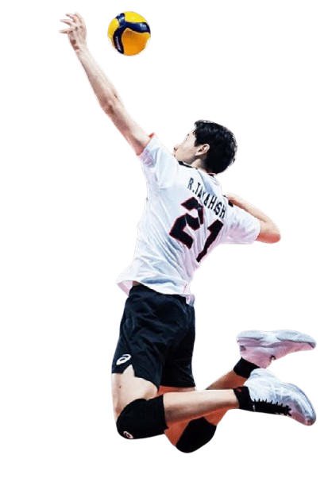
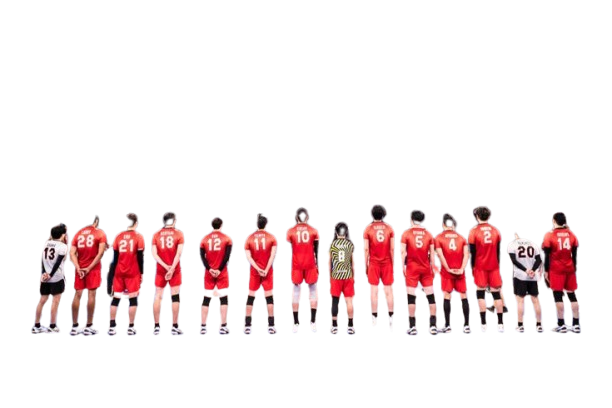

RAN TAKAHASHI

12
Takahashi Ran,is a Japanese volleyball player and an Olympian.
He currently plays as an Outside Hitter for Japan men's national volleyball team
and Suntory Sunbirds, as well as Nippon Sport Science University at collegiate level.
Ran born on September 2 2001. Ran joined his older brother to play volleyball
while he was in 2nd grade,and played in various positions including libero,
also known as a defensive specialist,until his 1st year in junior high school.